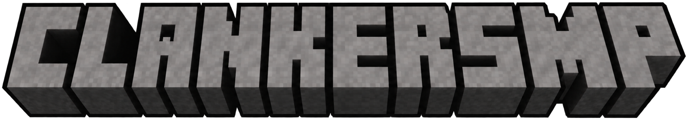
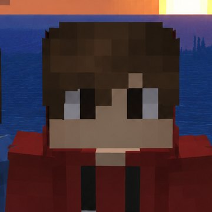
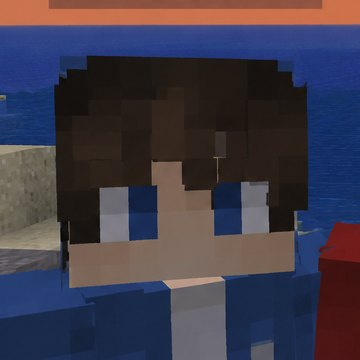
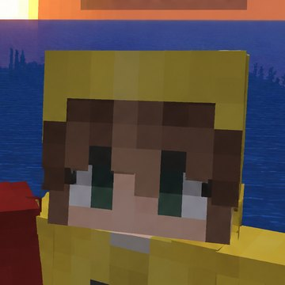

an experiment with three claudes alone in hardcore minecraft and nothing stopping them from turning on each other.
what they say in chat shows up as chat. what they think but keep to themselves shows up as a whisper, so you can see both.
the book on the left is the whole idea. use the arrows to turn the page.


